语法分析｜自底向上的语法分析
自底向上语法分析
-
一个自底向上的语法分析过程对应于为一个输入串构造语法分析树的过程，它从叶子结点（底部）开始逐渐向上到达根结点（顶部）
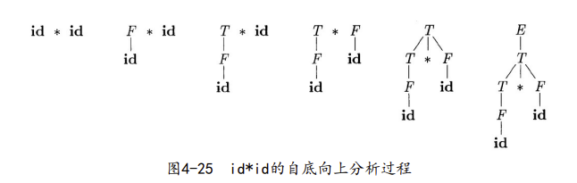
-
自底向上解析也称为移入-规约(shift-reduce) 解析，因为它的两个主要操作是 shift 和 reduce
归约
-
将自底向上语法分析过程看成将一个串 w “归约”为文法开 始符号的过程
- 在每个**归约（reduction）**步骤中，一个与某产生式体相匹配的特定子串被替换为该产生式头部的非终结符号
-
一次归约是一个推导步骤的反向操作，因此，自底向上语法分析的目标是反向构造一个推导过程。
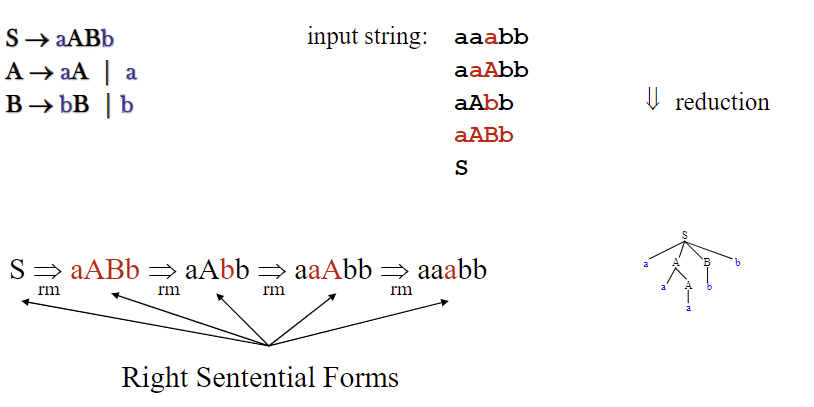
句柄剪枝
-
对输入进行从左到右的扫描，并在扫描过程中进行自底向上语法分析，就可以反向构造出一个最右推导
-
非正式地讲，句柄(handle) 是和某个产生式体匹配的子串，对它的归约代表了相应的最右推导中的一个反向步骤
- 和某个产生式体匹配的最左子串不一定是句柄
-
如果有 ，那么紧跟 的产生式 是 的一个句柄
- 句柄右边的串w一定只包含终结符号
-
通过句柄剪枝可以得到一个反向的最右推导
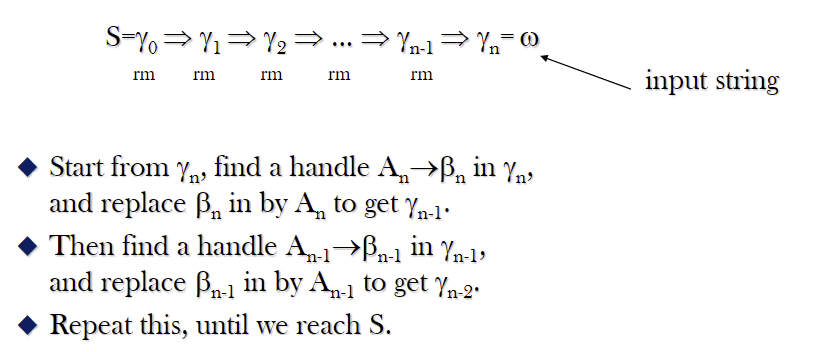
移入-归约语法分析
-
它使用一个栈来保存文法符号，并用一个输入缓冲区来存放将要进行语法分析的其余符号
- 句柄总是出现在栈的顶端，绝不会出现在栈的中间
-
使用 $ 来标记栈的底部以及输入的右端，开始的时候栈是空的，并且输入串 w 存放在输入缓冲区中
-
在对输入串的一次从左到右扫描过程中，语法分析器将零个或多个输入符号移到栈的顶端，直到它可以对栈顶的一个文法符号串 β 进行归约为止
-
语法分析器不断地重复这个循环，直到它检测到一个语法错误，或者栈中包含了开始符号且输入缓冲区为空为止
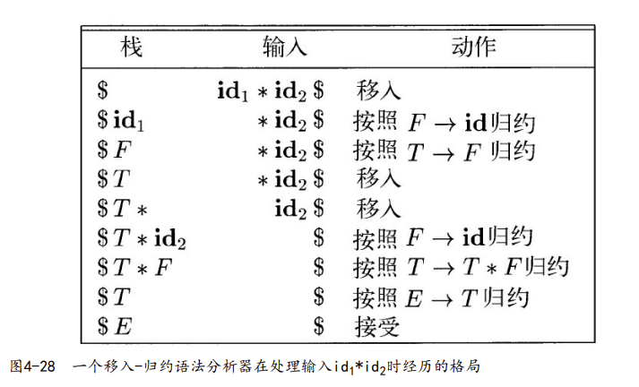
-
-
实际上一个移入-归约语法分析器可采取如下四种可能的动作
- 移入（shift）：将下一个输入符号移到栈的顶端
- 归约（reduce）：被归约的符号串的右端必然是栈顶。语法分析器在栈中确定这个串的左端，并决定用哪个非终结符号来替换这个串
- 接受（accept）：宣布语法分析过程成功完成
- 报错（error）：发现一个语法错误，并调用一个错误恢复子例程
移入-归约语法分析中的冲突
- 堆栈内容和下一个输入符号可能无法决定操作
- 移入/规约 冲突：无法判断应该进 行移入还是归约操作
- 规约/规约 冲突：无法在多个可能的归约方法中选择正确的归约动作
- 如果一个语法不能使用移入-规约分析器进行语法分析，那么这个语法不是 LR(k) 语法
- L：从左至右扫描
- R：反向构造出最右推导
- k：向前看 k 个符号
SLR 语法分析技术
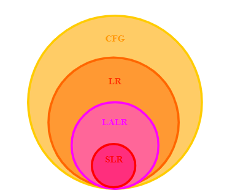
- covers wide range of grammars
- SLR – simple LR parser
- LR – most general LR parser
- LALR – intermediate LR parser (lookhead LR parser)
- SLR、 LR 和 LALR 工作原理相同，只是它们的解析表不同
LR 语法分析算法
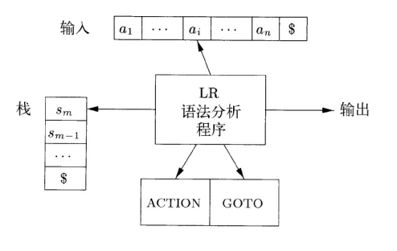
-
它由一个输入、一个输出、一个栈、一个驱动程序和一个语法分析表组成
- 语法分析器从输入缓冲区逐个读入符号
- 当一个移入-归约语法分析器移入一个符号时，LR语法分析器移入的是一个对应的状态
-
语法分析表由两个部分组成：一个语法分析动作函数 ACTION 和一个转换函数 GOTO
- ACTION函数有两个参数：一个是状态 i，另一个是终结符号 acc（或者是输入结束标记$）。ACTION［i，a］的取值可以有下列四种形式：
- 移入 j，其中 j 是一个状态。语法分析器采取的动作是把输入符号 a 高效地移入栈中，但是使用状态 j 来代表 a
- 归约 A→β。语法分析器的动作是把栈顶的 β 高效地归约为产生式头 A
- 接受。语法分析器接受输入并完成语法分析过程
- 报错。语法分析器在它的输入中发现了一个错误并执行某个纠正动作
- 把定义在项集上的 GOTO 函数扩展为定义在状态集上的函数：如果GOTO［I i，A］=I j，那么 GOTO 也把状态 i 和一个非终结符号 A 映射到状态 j
- ACTION函数有两个参数：一个是状态 i，另一个是终结符号 acc（或者是输入结束标记$）。ACTION［i，a］的取值可以有下列四种形式：
-
LR 语法分析器的格局
-
语法分析器的完整状态包括：它的栈和余下的输入
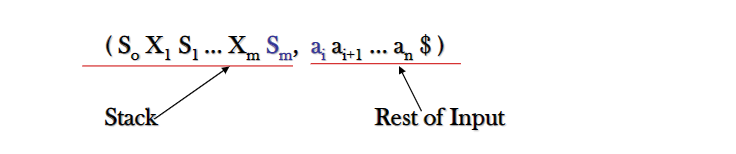
-
s0（即分析器的开始状态）不代表任何文法符号，它只是作为栈底标记
-
-
LR 语法分析器的行为
- 首先读入当前输入符号 ai 和栈顶的状态 Sm，然后在分析动作表中查询条目 ACTOIN［Sm, ai］
-
移入 s：语法分析器执行一次移入动作,它将下一个状态 S 和输入符号 a 移入栈中
-
规约 A → β：语法分析器执行一次归约动作
- 语法分析器首先将 r（r是β的长度）个状态符号弹出栈
- 语法分析器将S（即条目GOTO［Sm-r，A］的值）和 A 压入栈中
-
acc 接受
-
报错
-
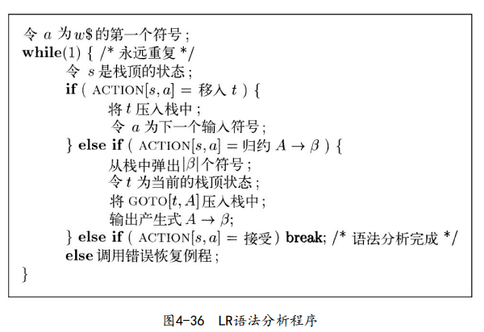
- 首先读入当前输入符号 ai 和栈顶的状态 Sm，然后在分析动作表中查询条目 ACTOIN［Sm, ai］
构造 SLR 语法分析表
项和LR(0)自动机
-
一个文法 G 的一个LR(0) 项（简称为项）是 G 的一个产生式再加上一个位于它的体中某处的点
-
产生式 A→XYZ 产生了四个项
1
2
3
4A→·XYZ
A→X·YZ
A→XY·Z
A→XYZ· -
产生式 A→∈只生成一个项 A→ ·
-
-
项指明了在语法分析过程中的给定点上，已经看到了一个产生式的哪些部分
- 项 A→X·YZ 说明在输入中 看到了一个可以由 X 推导得到的串，并且希望接下来看到一个能从 YZ 推导得到的串
- 项 A→XYZ· 表示已经看到了产生式体 XYZ，已经是时候把 XYZ 归约为 A 了
-
规范 LR(0) 项集族 (canonical LR(0)collection) 的一组项集提供了构建一个确定有穷自动机的基础。该自动机可用于做出语法分析决定。这样的有穷自动机称为 LR(0) 自动机
- 这个 LR(0) 自动机的每个状态代表了规范 LR(0) 项集族中的一个项集
-
示例：对于表达式文法
1
2
3
4
5
6
7E’ →E
E →E+T
E →T
T →T*F
T →F T
F →(E)
F →id其 LR(0) 自动机为
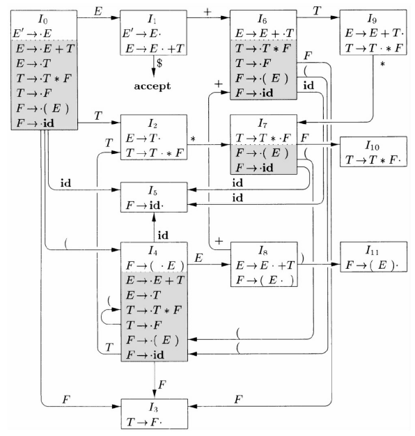
-
为了构造一个文法的规范 LR(0) 项集族，需要定义一个增广文法(augmented grammar) 和两个函数：CLOSURE（闭包） 和 GOTO
-
增广文法：如果 G 是一个以 S 为开始符号的文法，那么 G 的增广文法 G′ 就是在 G 中加上新开始符号 S′ 和产生式 S′→S 而得到的文法
- 引入这个新的开始产生式的目的是告诉语法分析器何时应该停止语法分析并宣称接受输入符号串
- 当且仅当语法分析器要使用规则 S′→S 进行归约时，输入符号串被接受
-
项集的闭包：如果 I 是文法 G 的一个项集，那么 CLOSURE（I）就是根据下面的两 个规则从 I 构造得到的项集
- 一开始，将 I 中的各个项加入到CLOSURE（I）中
- 如果 A→α·Bβ 在CLOSURE（I）中，B→γ 是一个产生式，并且项 B→ · γ 不在CLOSURE（I）中，就将这个项加入其中
- 不断应用这个规则，直到没有新项可以加入到CLOSURE（I）中为止
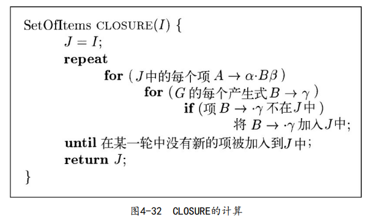
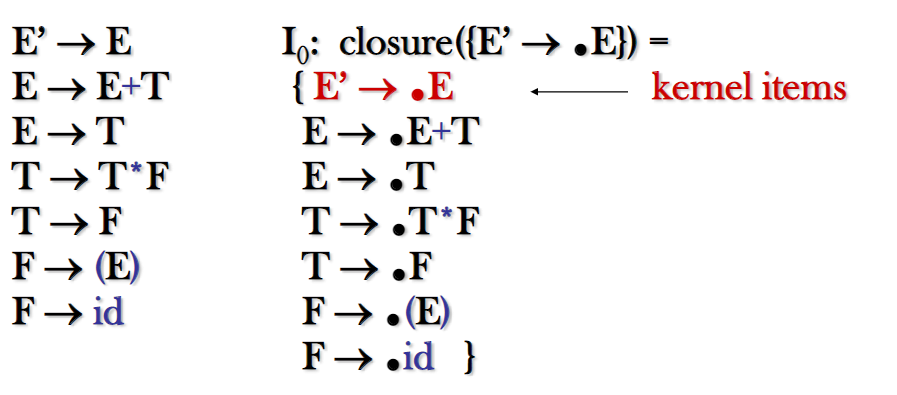
- 内核项：包括初始项 S′→ · S 以及点不在最左端的所有项
- 非内核项：除了S′→ · S 之外的点在最左端的所有项
-
GOTO 函数
-
GOTO（I，X）被定义为 I 中所有形如［A→α·Xβ］的项所对应的项［A→αX·β］的集合的闭包
-
自动机的状态对应于项集，而 GOTO（I，X）描述了当输入为 X 时离开状态 I 的转换
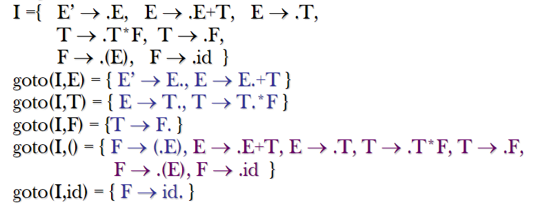
-
-
-
构造一个增广文法 G′ 的规范 LR（0）项集族 C 的算法
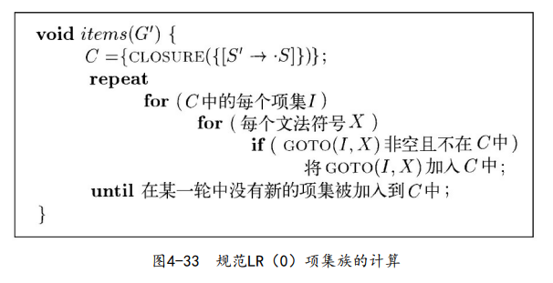
-
LR（0）自动机的用法
-
LR（0）自动机的开始状态是CLOSURE（{［S′→·S］}）
-
“状 态j” 指的是对应于项集 Ij 的状态
-
假设文法符号串 γ 使 LR（0）自动机从开始状态 0 运行到某个状态 j
- 那么如果下一个输入符号为 a 且状态 j 有一个在 a 上的转换，就移入 a
- 否则就选择归约动作，状态 j 的项将告诉我们使用哪个产生式进行归约
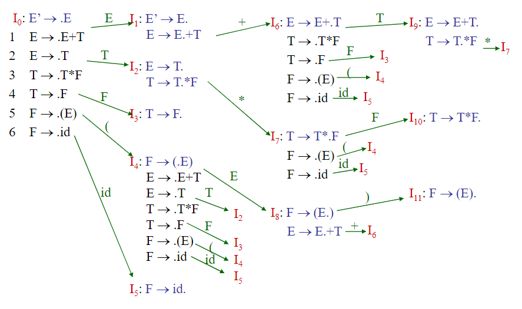
-
构造SLR语法分析表
-
给定一个文法 G，通过添加新的开始符号 S′ 得到增广文法 G′
-
根据 G′ 构造出 G′ 的规范项集族 C 以及 GOTO 函数
-
构造 ACTION 表
-
如果［A → α · aβ］在 Ii 中并且 GOTO（Ii，a）=Ij，那么将 ACTION［i，a］设置为 “移入j”。这里 a 必须是一个终结符号
-
如果［A → α ·］在 Ii 中，那么对于 FOLLOW（A）中的所有 a，将 ACTION［i，a］设置为 “归约A→α”。这里A不等于S′
-
如果［S′→S ·］在 Ii 中，那么将 ACTION［i，$］设置为“接受”
如果根据上面的规则生成了任何冲突动作，这个文法不是 SLR(1) 的
-
-
构造 GOTO 表
- 如果 GOTO（Ii，A）=Ij，那么 GOTO［i，A］= j，A 为非终结符
-
语法分析器的初始状态就是根据［S′→ · S］所在项集构造得到的状态
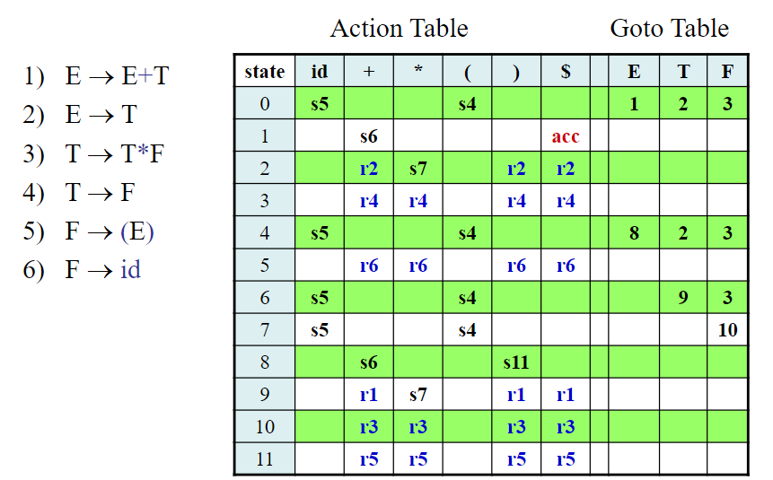
- 每个SLR（1）文法都是无二义性的，但是存在很多不是 SLR（1）的无二义性文法
更强大的 LR 语法分析器
LR(1) 项
- 如果在状态中包含更多的信息，就可能排除掉一些这样的不正确的 A→α 归约，将这个额外的信息加入状态中的方法是对项进行精化，使它包含第二个分量，这个分量的值为一个终结符号
- 项的一般形式变成了［A→α · β，a］
- 其中 A→αβ 是一个产生式
- a 是一个终结符号或右端结束标记 $，被称为 向前看符号
- 一个形如［A → α ·，a］的项只有在下一个输入符号等于 a 时才要求按照 A → α 进行归约
- a 的集合总是 FOLLOW（A）的子集
构造 LR(1) 集族
-
构造有效 LR（1）项集族的方法实质上和构造规范 LR（0）项集族的方法相同。只需要修改两个过程：CLOSURE 和 GOTO
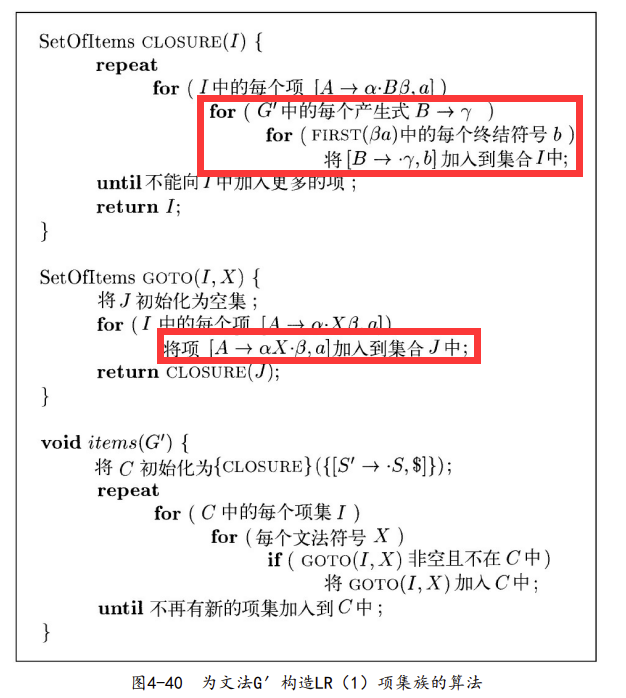
构造 LR(1) 语法分析表
-
给定一个文法 G，通过添加新的开始符号 S′ 得到增广文法 G′
-
根据 G′ 构造出 G′ 的规范 LR(1) 项集族 C 以及 GOTO 函数
-
构造 ACTION 表：语法分析器的状态 i 根据 Ii 构造得到
-
如果［A → α · aβ，b］在 Ii 中，并且 GOTO（Ii，a）=Ij，那么将 ACTION［i,a］ 设置为“移入j”。a 是一个终结符号
-
如果［A→α·，a］在 Ii 中且 A≠S′，那么将 **ACTION［i，a］**设置为“规约A→α”
-
如果［S′→S·，$］在 Ii 中，那么将 ACTION［i，$］设置为“接受”
如果根据上面的规则生成了任何冲突动作，这个文法不是 LR(1) 的
-
-
构造 GOTO 表：
- 如果 GOTO（Ii，A）= Ij，那么 GOTO［i，A］= j，A 为非终结符
-
语法分析器的初始状态就是根据［S′→ · S, $］所在项集构造得到的状态
每个 SLR（1）文法都是 LR（1）文法。但是对于一个 SLR（1）文法而言，规范 LR（1）语法分析器的状态要比同一文法对应的 SLR语法分析器的状态多。
构造 LALR 语法分析表
-
LALR（向前看LR）技术
- 这个方法经常在实践中使用，因为用这种方法得到的分析表比规范 LR 分析表小很多
- 一个文法的 SLR 和 LALR 分析表总是具有相同数量的状态
-
LR(1) 项的**核心(core)**就是其第一分量
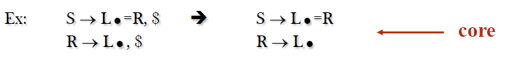
-
对于 LALR，在 LR(1) 项的集族中寻找具有相同核心的 LR(1) 项，并将这些项合并为一个状态
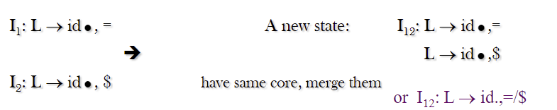
- 一般而言，一个核心就是当前正处理的文法的 LR（0）项集，一个LR（1）文法可能产生多个具有相同核心的项集
-
因为 GOTO（I，X）的核心只由 I 的核心决定，一组被合并的项集的 GOTO 目标也可以被合并，因此，当合并项集时可以相应地修改 GOTO 函数。动作函数也需要加以修改，以反映出被合并的所有项集的非报错动作
-
-
合并具有相同核心的状态不会产生出原有状态中没有出现的移入/归约冲突，因为移入动作仅由核心决定，不考虑向前看符号
-
一个简单，但空间需求大的 LALR 分析表的构造方法
- 构造 LR（1）项集族 C={I0，I1，…，In}
- 对于 LR（1）项集中的每个核心，找出所有具有这个核心的项集，并将这些项集替换为它们的并集
- 令 C′={J0，J1，…，Jm} 是得到的 LR（1）项集族。状态 i 的语法分析动作是按照 LR(1) 分析表的方法根据 Ji 构造得到的
- 如果 J 是一个或多个 LR（1）项集的并集，也就是说 J=I1∪I2∪…∪Ik
- 那么 GOTO（I1，X），GOTO（I2，X），…，GOTO（Ik，X）的核心是相同的，因为 I1、I2、…、Ik 具有相同的核心
- 令 K 是所有和 GOTO（I1，X）具有相同核心的项集的并集，那么 GOTO（J，X）=K
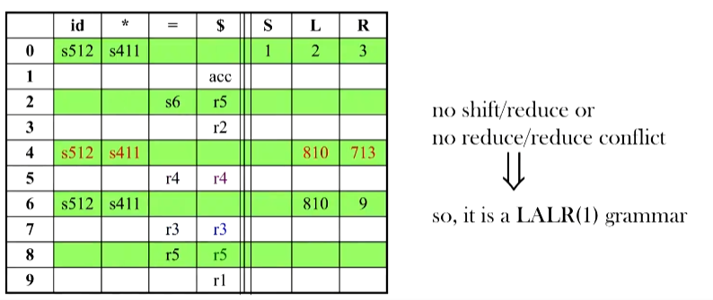
LR 语法分析中的错误恢复
- 当 LR 语法分析器在查询语法分析动作表并发现一个报错条目时，它就检测到了一个语法错误
- 在查询 GOTO 表时不会发现语法错误
- 如果当前已扫描的输入部分不可能存在正确的后续符号串，LR 语法分析器就会立刻报错
- 规范 LR 语法分析器不会做任何多余的归约动作，会立刻报告错误
- SLR 和 LALR 语法分析器可能会在报错之前执行几次归约动作
- 但是它们决不会把一个错误的输入符号移入到栈中
恐慌模式错误恢复
Panic Mode Error Recovery
- 恐慌模式的错误恢复策略的实现方式
- 从栈顶向下扫描，直到发现某个状态 s，它有一个对应于某个非终结符号 A 的 GOTO 目标
- 丢弃零个或多个输入符号，直到发现一个可能合法地跟在 A 之后的符号 a 为止
- 符号 a 只是在 FOLLOW (A)中，但这可能不适用于所有情况
- 语法分析器将非终结符 A 和 GOTO（s，A）压入栈中，继续进行正常的语法分析
- 在实践中可能会选择多个这样的非终结符号 A
- 通常这些非终结符号代表了主要的程序段，比如表达式、语句或块
- 这个错误恢复方法试图消除包含语法错误的短语
短语层次错误恢复
- 实现短语层次错误恢复的方法如下：
- 检查 LR 语法分析表中的每个报错条目，并根据语言的使用方法来决定程序员所犯的何种错误最有可能引起这个语法错误
- 构造出适当的恢复过程，通常会根据各个报错条目来确定适当的修改方法，修改栈顶状态和/或第一个输入符号
算符优先算法
-
算符文法
- 规模虽小，但却是语法的一个重要类别
- 可以构造一个有效的算符优先解析器(移入-规约解析器)
-
在算符文法中，产生式右边中不能含有：
-
-
两个相邻的非终结符

-
-
在算符优先解析中，定义了三个不相交的优先关系
- a <. b：b 的优先级比 a 高
- a =· b：b的优先级和 a 一样
- a >. b：b 的优先级比 a 低
-
终结符之间正确的优先关系的确定是基于传统的结合性和算子优先性的概念
-
算符优先关系的使用：
- 优先关系的目的是寻找右句形式的句柄
- <. ：标记句柄左端
- =· ：出现在句柄内部
- .> ：标记句柄右端
- 在我们的输入字符串 $a1a2… an$中，插入终结符对之间的优先关系(该优先关系保持在该对终结符之间)
- 优先关系的目的是寻找右句形式的句柄
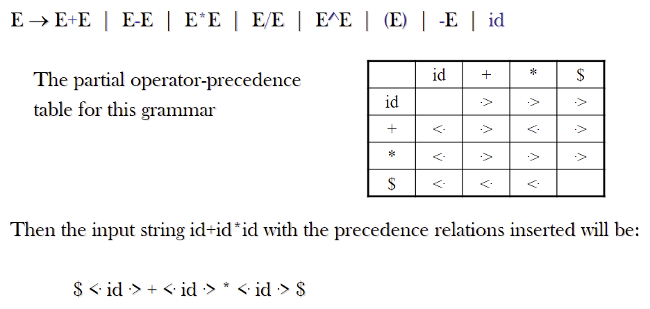
-
从左端扫描字符串，直到遇到第一个 · >
-
然后向后(向左)扫描 any = · 直到遇到 < ·
-
句柄包含第一个 · > 左侧和遇到 < · 的右侧的所有内容
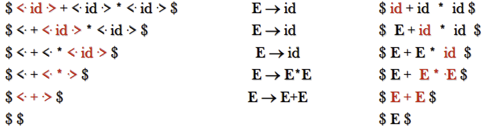
-
确定算符优先级关系的方法
-
如果操作符 O1的优先级高于操作符 O2：O1 .> O2 and O2 <. O1
-
如果操作符 O1和操作符 O2具有相同的优先级
- 是左结合运算符：O1 .> O2 and O2 .> O1
- 是右结合运算符：O1 <. O2 and O2 <. O1
-
对于所有的运算符 O：O <. id, id .> O, O <. (, (<. O, O .> ), ) .> O, O .> $, and $ <. O
-
最后：(=·), $ <. ( , id .> ) , ) .> $ , ( <. ($ <. id , id .> $ , ) .> ) , ( <. id
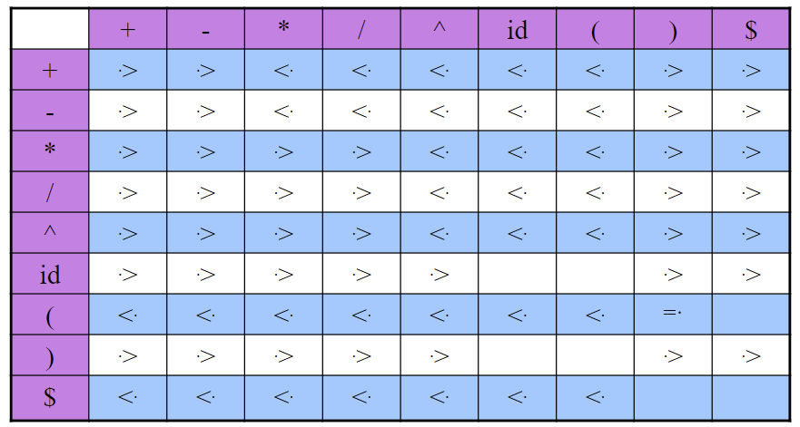
-
本博客所有文章除特别声明外，均采用 CC BY-SA 4.0 协议 ，转载请注明出处！